Contribution
Marc Fabian, UI Lead Programmer:
My personal contribution to the game has been primarily focusing at working on all UI systems you can find on the game.
I have done all the code for the ui, and most of the art as well (some concrete sprites have been done/ripped by someone else) some parts are ripped from the original games, and other ones are created/photoshoped by me.
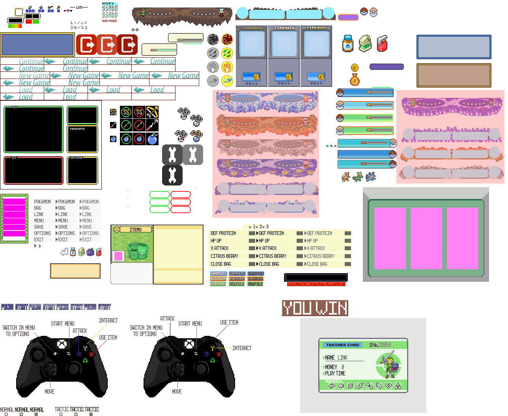
Concretely the parts marked in red have been done by Jordi Oña and Albert Llopart, anything else has been done by me.
At the start of the project I helped in engine code decitions and later on I worked on gameplay features such as bombs, shop, and pokemons (sceptyle, swampert) and multiple gameplay bugfixing.
InGame demostrations:
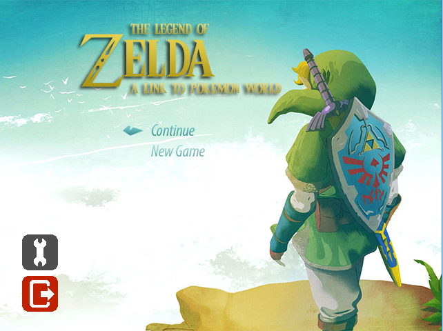
The main menu has a background image that scrolls in once you enter the menu, two principal buttons with animations (Continue and New Game) and two secondary buttons (Options for controller mapping & exit).
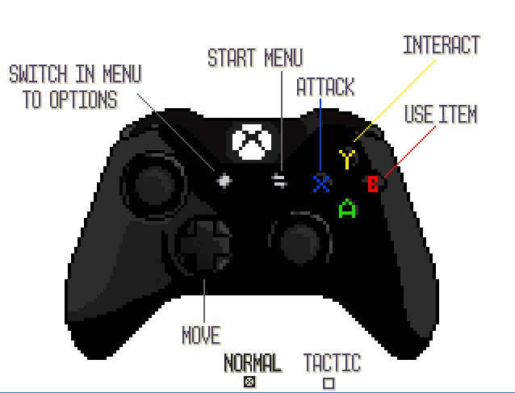
Screen for the Controller Mapping, you can choose between two pre-sets (normal & tactic) mappings.
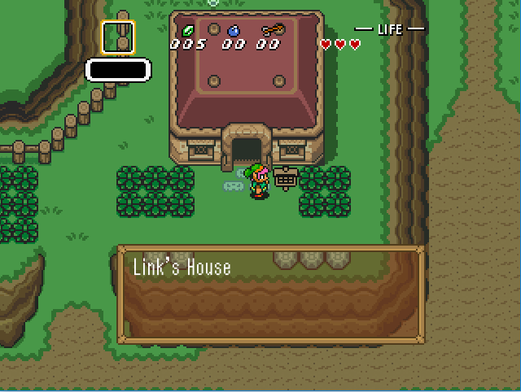
The Zelda hud shows the item you have equipped, the ammount of rupees, bombs and arrows, and your hp hearts aswell. The dialogues have a different background sprite for each type (Zelda World, Pokemon World, and Sign (showed in the image)).
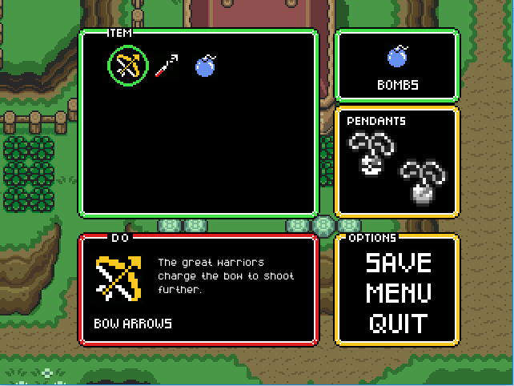 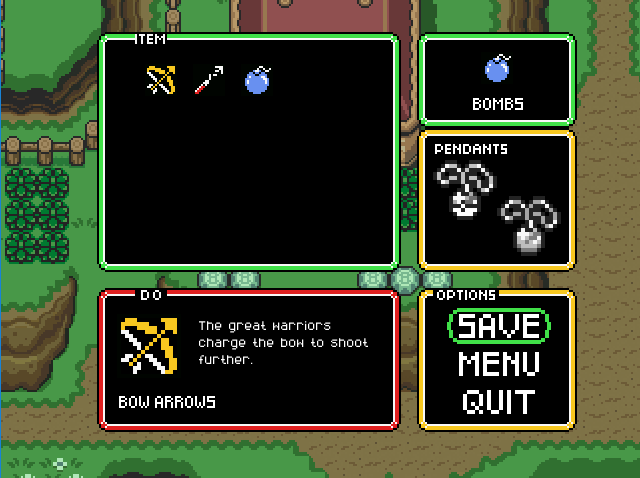
The Zelda Menu has the different picked items, it shows you the current equipped item (right top box), the item info, description and sprite of the item you are currently selecting (left bottom box), the pendants you have picked (they get colorized once picked) and options for the player (save game, go menu and quit).
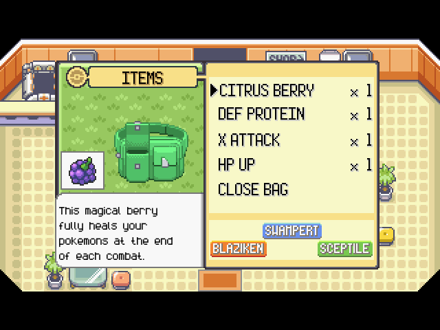
The Pokémon bag shows all the items you have. Its shows an image of the item your selecting and also a description of the use. You can see the amount of items you have of the same type (x1, x2, x3) and once you click them you can select the Pokémon you want to give it. It appears a pop out message when you equip the item.
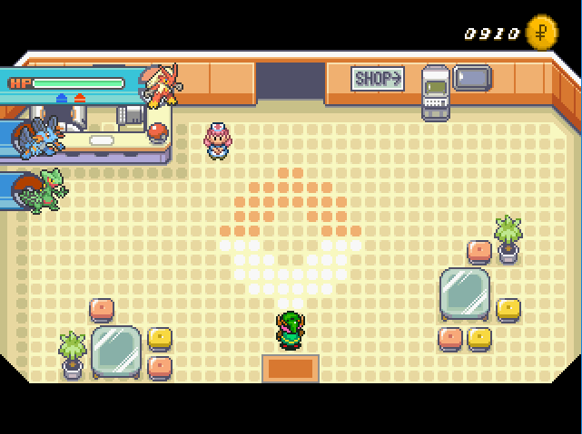
The Pokémon hud is quite minimal, in shows the pokecash you have and the order of your Pokémons for your combat, if you open the menu and click Pokémon, you can interact with the order (with ESCAPE or SELECT, you can access directly to there without opening the Pokémon menu), once you have a Pokémon selected, you can reorder him and you can see small arrows that are the feedback to see which items has that Pokémon (Blaziken is currently holding a defensive protein (blue arrow) and an X attack (red arrow).
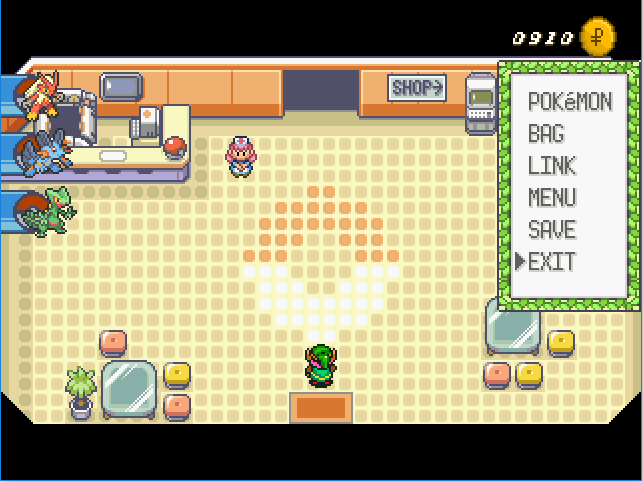
The Pokémon Menu shows the basic options to interact with the game.
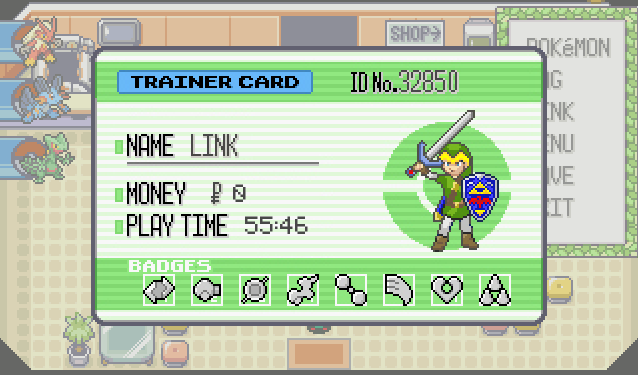
The trainer card shows the money you have and played time.
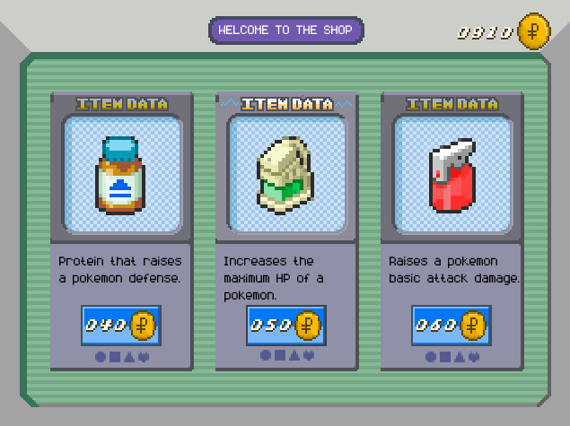
In the pc shop you can buy items for boosting your Pokémon stats. You can but Defensive protein, hp up and X attack.
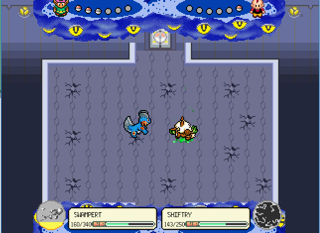
The PokemonCombat UI shows all the info needed in the combat phase, you can see both trainers in the top, with their Pokémon (Red Pokéball-> the Pokémon is alive, grey one ->The Pokémon is dead). In the bottom part, you can see the ability cool down at the left, next to the Pokémon hp bars. Each combat loads a different art linked to the enemy type of Pokémon.